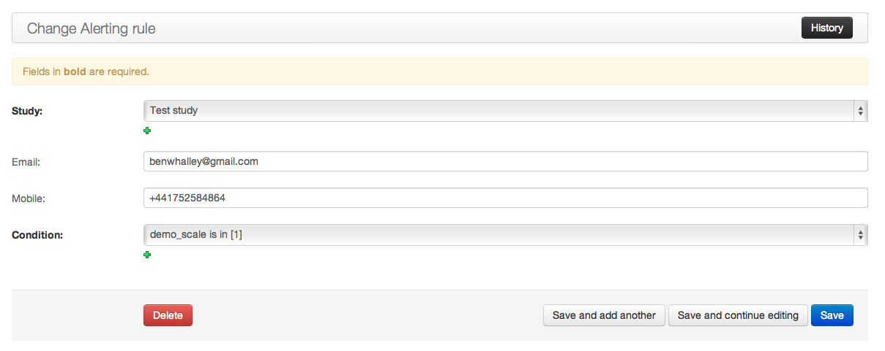

When using Signalbox, it’s helpful to distinguish between a Trial or Research Project (i.e. the work you are doing) and a Study. In Signalbox, studies have a specific meaning, and a complex trial may be split across several studies for convenience and simplicity.
To get a grip on how things are structured, see the SignalBox.
Start by adding a study.
The study change view
Complete the necessary details in the Overview and Study Information Fields sections, and upload an image to represent the study.
Studies may contain multiple conditions, each of which may use independent schedules to followup particpants. Study conditions can be added at the bottom of the Study change view.
Adding study conditions.
By default, participants will be randomised to study conditions in equal proportions. This can be amended by changing the weight option of the StudyCondition. Weighted randomisation is also possible to minimise group imbalances. These options are available under the Advanced tab on the study change view.
Advanced randomisation options.
When users register with the site (normally when they consent to take part in a study) Signalbox can request additional profile infromation from them, including:
By default these fields are optional, and not displayed to users. Each study can specify which of these fields should be (a) displayed and (b) required for paticipants to complete. This is specified by the Visible/required profile fields box on the study change view.
..note:: One current issue with the signup process is that participants are randomised to the study and observations created as soon as the user consents, and these observation can be triggered before they provide necessary profile information (e.g. mobile number). Be aware of this when defining study schedules.
In addition to observations defined by a Script, data can be collected ad-hoc, as users choose. Script specified in the Scripts allowed on an ad-hoc basis field can be executed by users from their profile page.
..note:: Script specified as allowed for user-prompted data collected may generate more than one observation, which may not be what is desired.
Observations may also be created in a responsive fashion, based on responses users make — for example, if a participants’ questionnaire responses meet some criteria.
When collecting data in responsive mode, the study administrator needs to define the conditions to be met to create and send additional observations. ObservationCreator, ShowIf and Scoresheet objects are used to do this.
ObservationCreators define a Script to be run when a Reply contains answers which meet a certain criteria. signalbox.models.ScoreSheets are used to define these criteria. A Scoresheet consists of a name and description, a list of Questions for which responses will be included and a function to be applied to answers to these questions.
Creating a ShowIf.
For example, a Scoresheet named ‘Beck Depression Inventory Sum Score’ might reference each of the questions in the BDI, and use the sum function. The compute method of the scoresheet will then apply the function to Answers provided within a given Reply (i.e. on a single occasion for a particular user) and return a single numeric value. At present sum, mean, stdev, median, min and max functions are available.
Note
Some of the score functions will return a floating point value (including the median function), which means direct equality comparisons with integers will not work always work as expected; e.g. if the function returns 2.000000000002 for median([1,2,3]), so comparison with the integer 2 will be False.
ShowIf objects define thresholds which scores calculated by ScoreSheets must meet before a Script can be run and new observations created. For example, a ShowIf might specify that a BDI score in a particular reply must be > 15 for the script to be executed.
Note
ShowIf objects are also used for conditional display of Questions and Instruments within Askers.
In some cases it may be necessary to alert researchers if participants make particular responses: for example, answers to questions relating to suicide which indicate participants may be at risk. To facilitate this, it’s possible to attach Alerting rules (signalbox.models.Alerts) to studies.
As with responsive-mode data collection, alerts use ShowIf objects to define conditions under which an alert will be sent. Alerts also store an email address and/or mobile phone number to send email or sms-based messages when triggered.
Some larger RCTs may require blinded assessments to be made, and employ assessors to interview partipants. Although assessors need access to the system to enter (and perhaps double enter) data, it’s important that they don’t encounter information which might compromise the blind. Such a situation would obviously occur if assessors could see the condition to which a participant was added. However less obvious situations might occur, when assessments differ between study conditions. For example, if assessors could:
To prevent this, assessors have only limited access to the site, and have a specific view designed to let them safely access observations and update client data. This is available at:
/admin/signalbox/observations/outstanding
From here, assessors can filter clients by username (which is likely to be a unique alphanumeric code rather than a name) and list Observations which are due to be made. This view automatically filters out observations which:
From this view, assessors can select an observation and enter data for it.
Warning
Blinded Assessors and access to observations-due
Care is needed when creating scripts and questionnaires which blind assessors will access. In particular the following must not include content which could reveal which group a participant is in as the assessor enters data: